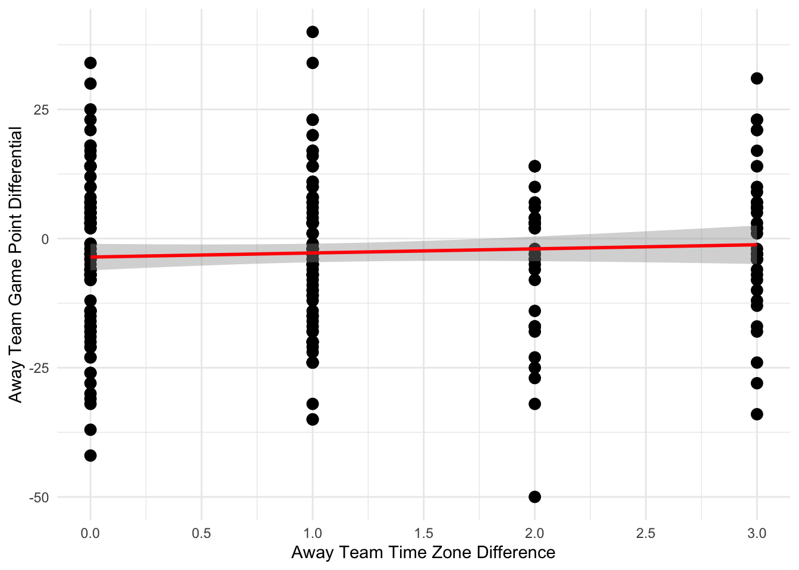

Code
library(dplyr)
library(ggplot2)
library(scales)
scores <- read.csv("data/2023NFLSCORES.csv")
scores <- scores %>%
rename(
Home_Team = X.1,
Away_Team = X.2,
Home_Score = X.4,
Away_Score = X.3
)
colnames(scores)[1] "X" "Home_Team" "Away_Team" "Away_Score" "Home_Score"
[6] "X.5" "X.6" Code
team_tz <- data.frame(
team = c("SEA", "SF", "LAR", "LAC", "LAV", "DEN", "ARI", "MIN","KC", "DAL", "HOU", "NO", "TEN", "CHI", "GB", "IND", "DL", "CLE", "ATL", "CAR","JAX", "TB", "MIA", "PIT", "BUF", "BAL", "PHI", "NYJ", "NYG", "NE", "CIN", "WAS"
),
timezone = c("PST", "PST", "PST", "PST","PST", "MT", "MT", "CT", "CT", "CT", "CT", "CT", "CT", "CT", "CT", "ET", "ET", "ET", "ET", "ET", "ET", "ET", "ET", "ET", "ET", "ET", "ET", "ET", "ET", "ET", "ET", "ET"
)
)
tz_map <- c(PST = -3, MT = -2, CT = -1, ET = 0)
games <- scores %>%
left_join(team_tz, by = c('Home_Team' = 'team')) %>%
rename(home_tz = timezone) %>%
left_join(team_tz, by = c('Away_Team' = 'team'))%>%
rename(away_tz = timezone)
games <- games %>%
mutate(
Home_Score = as.numeric(Home_Score),
Away_Score = as.numeric(Away_Score),
home_offset = tz_map[home_tz],
away_offset = tz_map[away_tz],
tz_diff = abs(home_offset - away_offset),
point_diff = Away_Score - Home_Score,
)
ggplot(games, aes(x = tz_diff, y = point_diff)) + geom_point(size = 3) + geom_smooth(method = "lm", se = TRUE, color = 'red') + theme_minimal() +
scale_x_continuous(breaks = pretty_breaks()) + labs(
x = 'Away Team Time Zone Difference',
y = 'Away Team Game Point Differential'
)